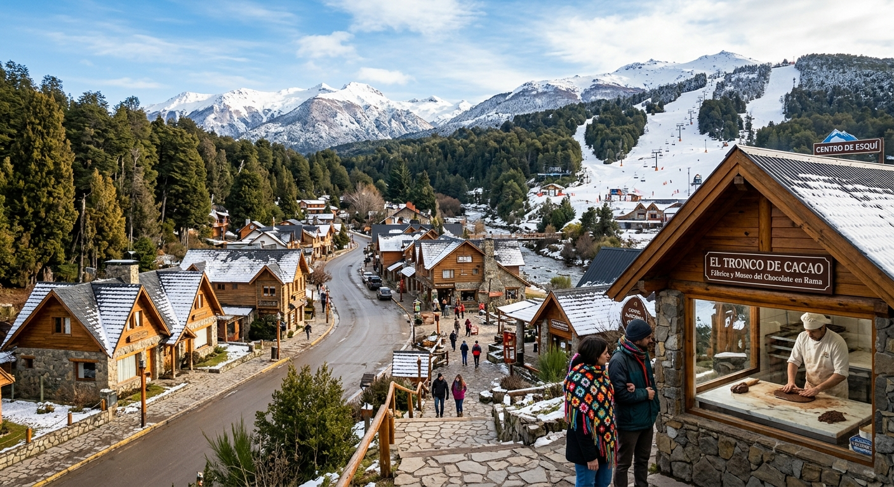
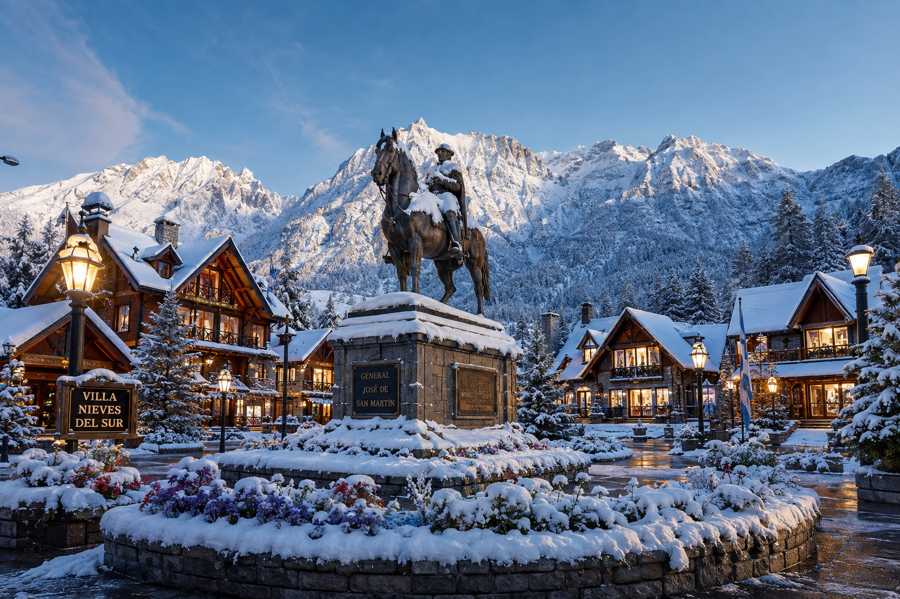
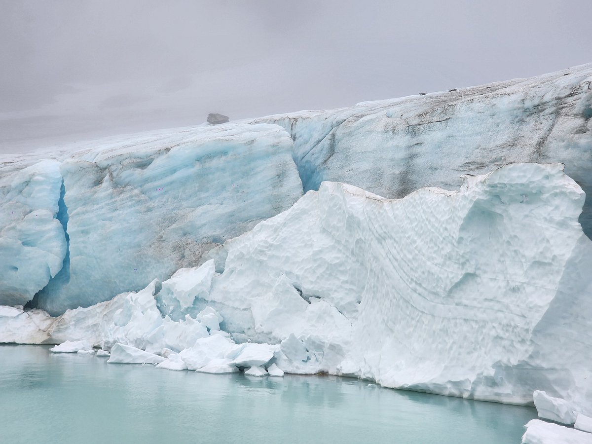
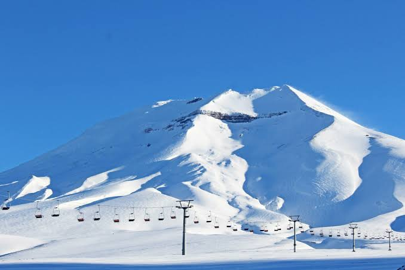
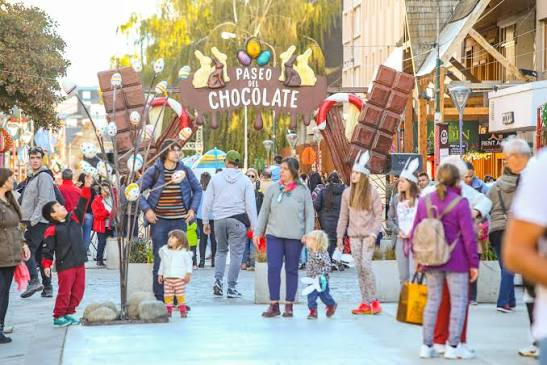
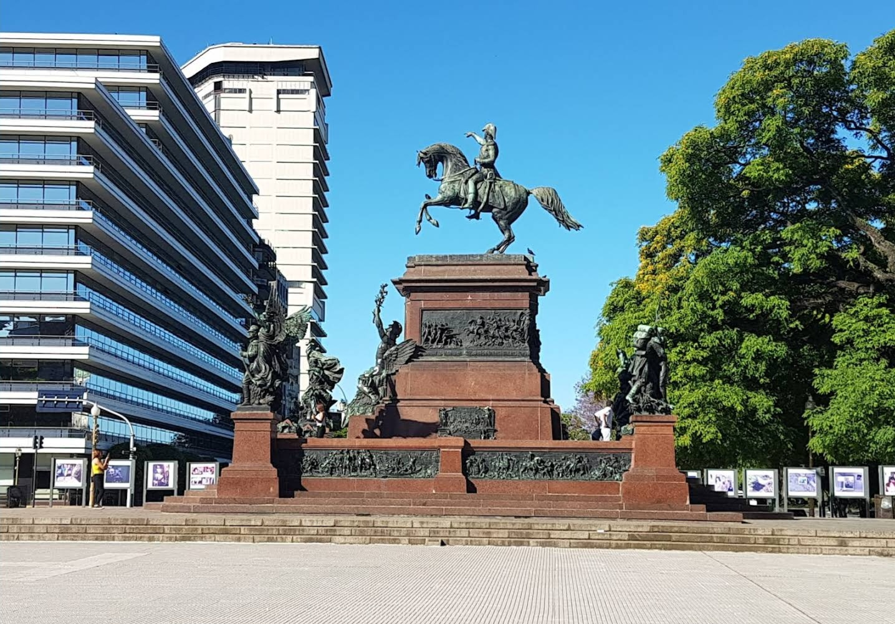
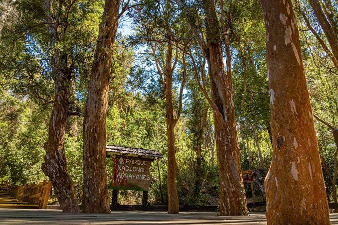
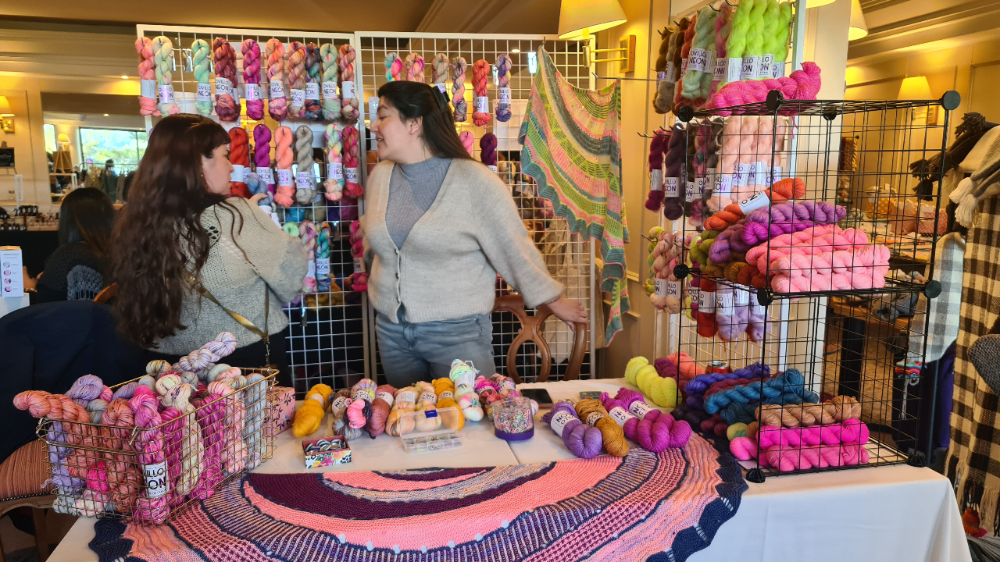

Bienvenido a Villa Nieves del Sur, un enclave patagónico mágico ubicado en el suroeste de la provincia de Neuquén, a tan solo unos kilómetros del límite con Río Negro. Conocida mundialmente como la Capital Nacional del Chocolate en Rama, nuestra ciudad combina la majestuosidad de los glaciares milenarios, bosques autóctonos protegidos y picos siempre nevados, con la calidez de su arquitectura en madera y piedra.

En los últimos años, Villa Nieves del Sur se está popularizando a gran velocidad como uno de los destinos emergentes más codiciados de la Patagonia. Es la ciudad ideal para los amantes de los deportes invernales y el esquí en sus modernas pistas de nieve en polvo, así como para realizar fascinantes recorridos turísticos y circuitos de trekking entre lagos de origen glaciar, cascadas e históricas aldeas artesanales. Aquí, el aroma a cacao fresco y la suavidad de la lana tejida a mano te acompañan en cada paso.

Atractivos destacados

Glaciar Ventisquero Blanco
Una colosal masa de hielo accesible mediante senderos interpretativos

Centro de Esquí "Cerro Nieve Blanca"
Pistas para todos los niveles, medios de elevación y vistas panorámicas únicas a la cordillera

Paseo de los Chocolateros
La calle principal donde el arte del cacao en rama cobra vida a la vista de los visitantes

Plaza San Martín de las Nieves
Un lugar de homenaje al libertador de la Cordillera de los Andes

Bosque Encantado de Arrayanes y Coihues
Reserva natural de flora y fauna autóctona protegida como el huemul y el pudú

Fiesta Nacional de la Bufanda de Crochet
Celebración invernal con ferias, talleres y prendas colectivas gigantes
Newsletter
Ingresá tu correo, y suscribite a la lista de correos de la ciudad!